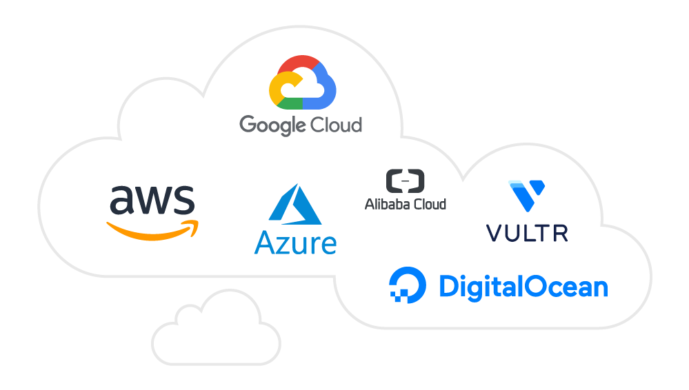

Step-by-step instructions to install OLSPanel on all supported platforms.
Before installing OLSPanel, ensure your server meets the following minimum requirements to guarantee optimal performance and compatibility.
Note: OLSPanel does not support Windows servers. For Windows-based hosting, consider using a virtual machine with a supported Linux distribution.
Choose your operating system and follow the appropriate commands below:
apt update && apt -y upgrade && apt -y install curl wget sudobash <(curl -fsSL https://olspanel.com/install.sh || wget -qO- https://olspanel.com/install.sh)yum update -y && yum install -y curl wget sudobash <(curl -fsSL https://olspanel.com/install.sh || wget -qO- https://olspanel.com/install.sh)
Note: After installation, you will get login information (username, password, and URL) to access OLSPanel like:
https://your-server-ip:port
username: admin
password: **********
Ignore the self-signed certificate warning and create an admin user immediately to prevent unauthorized access.

OLSPanel can be installed on various cloud platforms or a dedicated server. This guide covers installation on Amazon Web Services (AWS), DigitalOcean, Google Cloud, Microsoft Azure, Vultr, and other dedicated servers. Before proceeding, ensure your server meets the system requirements.
ssh -i your_private_key.pem ubuntu@yourElasticIpAddressbash <(curl -fsSL https://olspanel.com/install.sh || wget -qO- https://olspanel.com/install.sh)ssh root@yourDropletIpAddressbash <(curl -fsSL https://olspanel.com/install.sh || wget -qO- https://olspanel.com/install.sh)OLSPanel) for firewall rules.bash <(curl -fsSL https://olspanel.com/install.sh || wget -qO- https://olspanel.com/install.sh)ssh -i your_private_key azure@yourIpAddressbash <(curl -fsSL https://olspanel.com/install.sh || wget -qO- https://olspanel.com/install.sh)bash <(curl -fsSL https://olspanel.com/install.sh || wget -qO- https://olspanel.com/install.sh)For a dedicated server or any other cloud provider not listed above, follow these steps:
ssh -i your_private_key root@yourIpAddress or ssh root@yourIpAddress (if using a password).bash <(curl -fsSL https://olspanel.com/install.sh || wget -qO- https://olspanel.com/install.sh)After installation on any platform:
Note: After installation,you get login information username , password and url for access OLSPanel like as https://your-server-ip:port
username: admin
password: **********
Ignore the self-signed certificate warning and create an admin user immediately to prevent unauthorized access.